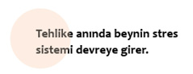
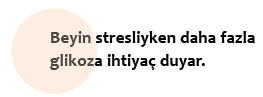
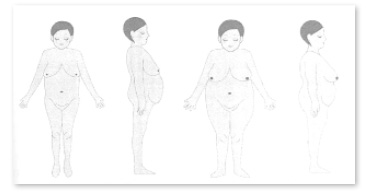

Beynin stres sistemi
Bütün canlıların açlık durumunda ne kadar hızlı bir şekilde gerildiklerini ve saldırganlaştıklarını biliriz. Achim Peters insanoğlunun altı öğün yemediğinde bu raddeye gelebileceğini iddia ediyor. Aç kalan insanlar, doğayla ve diğer insanlarla sürdürdüğü yiyecek kavgasının bir benzerini de kendi içinde yaşar. Buradaki mücadele beyin ve beden arasında gerçekleşir. Bu mücadelede söz konusu olan madde glikozdur.
Beynin bedenin en önemli organı olduğunu bir önceki bölümde irdelemiştim. Bu hayati öneminden dolayı beyin ihtiyaç duyduğu glikoz konusunda pasif bir tutum sergileyip, durumu bedenin “vicdanına” bırakamaz ve aktif bir şekilde glikoz siparişi verir.
Egoist Beyin teorisini geliştiren bilim insanları, kanda yeterli miktarda glikozun, yani enerjinin olup olmadığı, bunun ne hızla beyne sunulduğu ve bir sonraki porsiyonun ne zaman geleceğiyle ilgili olarak beynin davranışını lüks bir lokantaya giden kaprisli bir müşterininkine benzetirler. Nasıl o müşteri bütün personeli kendine hizmet etmeye zorluyorsa, beyin de glikoz ihtiyacını karşılamak için bedendeki “bütün personeli” gece gündüz seferber eder.
Peki ama kaprisli müşteri bunu parası ya da ünüyle yaparken, beyin bunu nasıl gerçekleştiriyor? Bunu yapabilmek için beynin elinde son derece güçlü bir silah vardır: stres sistemi.
Stres sistemi devrede
İsminden de anlaşılacağı gibi beynin stres sistemi, stresli ve tehlikeli bir ortamda olduğumuzda devreye girer. Burada önemli olan kişinin ortama yönelik öznel tutumudur. Dolayısıyla aynı olay ya da ortama bazı insanlar yoğun stres tepkisi verirken, bazıları hafif bir stres tepkisi verir, bazıları ise hiç tepki vermez. Ya da aynı insan aynı duruma bazen stres tepkisi verir, bazen de vermez. Mesela önemli bir randevunuz olduğunda trafikte sıkışmak sizde stres tepkisine yol açarken, randevunuz olmadığında strese girmezsiniz. Yırtıcı bir hayvanla karşılaşmak, deprem, şiddet ya da açlık gibi olaylar bütün insanlarda stres tepkisine yol açar.

Stres tepkisinin bedende ve ruhta yarattıklarına baktığımızda olumsuz bir tabloyla karşılaşsak da, bu tepki evrimsel açıdan hayatta kalmamızı sağlar. Çünkü bu tepkinin asıl amacı tehlikeli ortamlarla daha iyi başa çıkabilmek ve strese yol açan duruma karşı hemen vur ya da kaç tepkisini harekete geçirmektir. Böyle bir durumda kişinin tepki verme hızı artar, bedeni yüksek miktarda adrenalin ve kortizol hormonu üretir, tansiyonu yükselir ve beden yüksek aktivite içine girer. Tehlike geçtikten sonra ise stres sistemi tekrar rahatlar. Hayatta kalmamız için son derece önemli olan bu sistem, eylemde olmasa dahi, kulağı her zaman kiriştedir. Bir annenin derin uyku halindeyken bile bebeğinin çıkardığı sesi duymasını sağlayan da işte bu stres sistemidir.
Stresin bedende ne tür tepkilere yol açtığını araştıran Lübeck Üniversitesi’nden bilim insanları, bir deney kapsamında bir grup öğrenciyi, kan değerlerini kontrol ettikten sonra stresli bir sözlü sınava tabi tutarlar. 10 dakikalık sınavdan sonra öğrencilerin kan değerleri tekrar kontrol edildiğinde adrenalin ve kortizol hormonlarının en üst seviyede olduğu gözlenmiştir. Bunun yanı sıra bedensel boyutta kalp çarpıntısı, huzursuzluk, titreme ve terleme söz konusudur. Mental boyutta ise konuşma ve konsantrasyon sorunları, net görememe, baş dönmesi, yavaş düşünme gibi “nöroglükopenik semptomlar” gözlemleyen bilim insanları, psikososyal stresin beyin hücrelerinde glikoz eksikliğine, yani bir enerji sorununa yol açtığını ortaya çıkarmışlardır.
Beyin enerji krizinde
Vücuda alınan karbonhidrat glikoza çevrilir ve incebağırsak tarafından karaciğere gönderilir. İhtiyaca göre glikoz kana aktarılır. İhtiyaç fazlası ise depolanır. Kandaki glikozun bir kısmı beyne bir kısmı da organlara, kaslara ve yağ dokularına gider. Bu durumda beyin demokratik hukuk sistemi modundadır, zira herhangi bir enerji krizi yaşamıyordur. İhtiyaç duyduğu enerji miktarını bedene bildirir ve bu ihtiyacı karşılanır. Böylelikle beden ve beyin bütün diğer organlarla birlikte uyum içinde yaşarlar.
Ancak beyin stresli durumlarda, bu sorunla başa çıkabilmek için daha fazla glikoza ihtiyaç duyar. Sınav ortamına geri dönersek; doğru cevapları bulabilmek, hocanın karşısında mahcup duruma düşmemek ve başarısızlık gibi kaygılardan dolayı öğrencilerin beyinlerinin glikoz ihtiyacı artar.
Hayatta kalmamız için beynin her an yeterli miktarda glikoza ihtiyacı olduğundan beyin hemen stres sistemini devreye sokarak, diktatörlük ilan eder ve ihtiyaç duyduğu enerjiyi bedenin depolarından çeker. Bu güce beynin çekim gücü ya da Brain-Pull adı verilir. Ve bu güç devreye girdiğinde beyin ihtiyaç duyduğu enerjiyi depolardan çeker. Beynin enerji ihtiyacı giderildiğinde “olağanüstü hal” durumunu teşkil eden Brain-Pull devreden çıkar.
Diktatörlüğün biyokimyası
Doğanın bir mucizesi olan beyin hem kendi enerji ihtiyacını ölçer, hem de gerekli enerji siparişini verir. Beyin Ventromedial Hipotalamus (VHM) bölümünde Adenosintrifosfat (ATP) sensörleri aracılığıyla kendi enerji ihtiyacını mütemadiyen ölçer. Enerji ihtiyacı tespit edildiğinde hemen beynin stres sistemi devreye girer. Sistem devreye girdiğinde yüksek miktarda adrenalin ve kortizol salgılanır. Yani olağanüstü hal ilan edilir. Böylelikle beynin ihtiyacını karşılamak için bedenin depolarındaki glikoz kana aktarılır ve buradan da beyne gider.
Kandaki glikozun tekrar kaslara ya da yağ dokularına gitmesini engellemek içinse beynin verdiği bir emir pankreasın insülin üretimini durdurur. Zira kasların ve yağ dokularının kandaki glikozu kullanabilmeleri için, glikozun insülin tarafından işlemden geçirilmesi gerekir. Aksi takdirde glikoz kaslar ve yağ dokuları için kullanılamaz. Bundan dolayıdır ki tip-1 diyabet hastaları pankreaslarının üretemediği insülini dışarıdan almak zorunda kalırlar. İşte beyin tam da bu mekanizmayı devreye sokarak, insülin üretimini durdurur ve böylelikle kandaki glikozun yegâne sahibi olur. Beyin kendi ihtiyacını karşıladıktan sonra olağanüstü hali devreden çıkarır. Pankreas tekrar insülin üretir ve kandaki glikoz depolara aktarılarak, depolar tekrar doldurulur.
Tekrar sınav stresi yaşayan öğrencilere dönersek; sınav sonrasında öğrencilerin kanında yüksek miktarda adrenalin ve kortizol hormonunun yanı sıra, çarpıntı, huzursuzluk, titreme, terleme, konsantrasyon sorunları, net görememe, baş dönmesi ve yavaş düşünme gibi semptomların gözlemlendiğini belirtmiştim. Sınav sonrasında öğrencilere açık bir büfede istedikleri her şeyi yeme imkânı sunan bilim insanları, söz konusu semptomların yemek sonrasında ortadan kalktığını gözlemliyor. Yani öğrenciler enerji depolarında oluşan eksikliği giderdiklerinde “normalleşiyor.” Aynı testten geçmiş bir başka gruba ise yalnızca kalorisiz bir sosla hazırlanmış salata veren bilim insanları, ikinci gruptakilerin beyinlerinde oluşan nöroglükopenik semptomların (konstrasyon sorunları, baş dönmesi, yavaş düşünme) geçmediğini gözlemliyorlar. Belli ki beyin olağanüstü hal ilan edip, vücuttaki glikozu tükettikten sonra, ancak enerji depoları tekrar glikozla doldurulduğunda rahatlayabiliyor.

Uzmanlar, beynin enerji ihtiyacı hissettiğinde olağanüstü hal konumuna geçip çekim gücünü (Brain-Pull) devreye sokarak, vücuttan glikoz çekmesinin ona beden evriminde en yüksek konumu sağladığını savunuyor. Çünkü ancak bu yeti sayesinde beyin büyüyebilir, kendi içinde son derece karmaşık bir yapı oluşturabilir, daha fazla bilgi muhafaza edebilir ve daha iyi düşünebilir hale gelebilir.
Beynin çekim gücü zayıflatır
Beynin stres sisteminde herhangi bir bozukluk yoksa, şişmanlamak mümkün değildir. Zira beyin ihtiyaç halinde glikozu enerji depolarından çekebiliyor demektir. Beynin enerji çekiminden dolayı boşalan depoları ise tekrar yiyerek doldururuz. Tabii ki bu stres sistemi işleyen insanların 34 beden olacakları anlamına gelmez. Bir insanın doğal kilosu 70’se ve stres sistemi de işliyorsa bu, o insanın kilosuyla ve stres sistemiyle uğraşmaması anlamına gelir.
Ancak stres sistemi işleyen ve kronik bir strese maruz kalmış kişiler zamanla zayıflar. Bunlar kitabın önsözünde de belirttiğim gibi, A grubu insanlarıdır. A grubundakiler kronik stres yaşadığında tipik bir depresyona girer ve kelimenin tam anlamıyla “yemeden, içmeden kesilirler.” Kronik stres karşısında beyin ihtiyaç duyduğu glikozu enerji depolarından alır ve kişi zayıflar. Stresli dönem sona erdiğindeyse tekrar eski kilosuna döner. Stresli dönemin kalıcı olduğu durumlardaysa bu insanlar zayıf kalırlar.
Burcu’nun dramı
Burcu 30 yaşında, 1,70 boyunda ve 65 kiloda, iyi eğitimli bir kadındır. Burcu’nun kilo sorunu hiç olmamıştır. Arkadaşlarının açlık hissetmeden duygusal nedenlerle yemek yemesine daima şaşırmıştır. Çünkü onun beyninin çekim gücü işlemektedir; Burcu tipik bir A grubu insanıdır. Beyninde enerji sıkıntısı yaşandığında stres sistemi devreye girer, depolardan enerji çeker ve o da sonradan vücuduna aldığı gıdayla tekrar bu depoların dolmasını sağlar. Yurtdışında aldığı reklamcılık eğitiminden sonra İstanbul’a dönen Burcu büyük bir reklam ajansında çalışmaya başlar. Şirkette müşteriler için satış stratejileri geliştiren küçük bir ekibin başına geçer. Burcu’nun işgünü bir fincan kahveyle başlar ve konsantre olabilmek için gerektiğinde gün içinde birkaç fincan kahve daha içer. Her sabah şefiyle yapmak zorunda olduğu görüşmeler zamanla Burcu için çekilmez bir hal alır. Çünkü şefi son derece keyfi davranan biridir. Aynı proje için bir gün “Çok şahane olmuş” derken, bir sonraki gün “Berbat” diyebilmektedir. Dolayısıyla Burcu, onun hangi kriterlere göre tavır aldığını çıkaramamanın ve buna göre tutum belirleyememenin verdiği yoğun bir stres yaşar. Şefinin bu keyfi durumu Burcu’yu kendi ekibi karşısında da zor durumda bırakır. Şefinin bir süre önce beğendiği ve Burcu’nun da kendi ekibiyle hazırladığı herhangi bir projenin sonradan şefin fikir değiştirmesiyle rafa kaldırılması onun çalışanları nezdinde otoritesini sarsar. Burcu bu yüzden şirkette yoğun bir stres altındadır. Bu yetmiyormuş gibi şirket içi bir değişim nedeniyle ona ve ekibine bir başka bölümün de sorumluluğu verilir. Bu da durumu daha da içinden çıkılmaz bir hale sokar. Ekipteki insanlarda fazla mesainin yarattığı gerginliği giderebilmek amacıyla Burcu daha fazla çalışır. Hemen hemen her gün mesaiye kalır. Ve artık bütün yaşamı iş ile ev arasında geçer. Her akşam son derece gergin bir şekilde eve gelen Burcu sadece birkaç kadeh içki içerek rahatlar. Burcu’nun tipik bir A grubu insanı olduğunu daha önce belirtmiştim. A grubundaki herkes gibi Burcu’nun da beynindeki stres sistemi kesintisiz çalışmaktadır. İçinde bulunduğu yoğun stresten dolayı beyin çok fazla enerjiye ihtiyaç duyar, her enerji ihtiyacında stres sistemini devreye sokar ve depoları boşaltır. Burcu sonradan vücuduna aldığı besinlerle depoları tekrar doldurur. Bu durumda Burcu’nun kilosunda bir değişiklik olmaz. Stresin kronikleşmesi bir müddet sonra onda tipik bir depresyona yol açar. Bu durumda beyin yine ihtiyaç duyduğu enerjiyi depolardan karşılar, ama Burcu yemekten kesildiği için zayıflar.
Bu durum “zayıflık diktatörlüğünün” yürürlükte olduğu günümüz dünyasında birçoğumuza son derece çekici görünse de sağlık için tehlike arz eder. Zira stres sisteminin sorunsuz çalışıyor olması kişiyi bir taraftan zayıflatırken, diğer taraftan kanında sürekli yüksek miktarda kortizol hormonunun bulunmasına yol açar.
Yaşadığı stresli durumun yıllarca devam etmesi sonucunda Burcu’nun bedeninin diğer bölümleri normal kalırken karnında yağ oluşumu başlayacaktır. Çünkü kanda uzun bir süre yüksek miktarda kortizol bulunması, beden metabolizmasını değiştirecektir. A grubundakiler yıllarca kronik stres yaşadıklarında şişmanlamazlar ama göbeklenirler.
Vücut ve yağ dokusu
Vücutta iki çeşit yağ dokusu vardır:
1. Vücut yağı (perifer yağ)
2. Karın yağı (abdominal yağ)

Karın yağıVücut yağı
Vücut yağı bedenin her noktasında oluşabilir. Yüz, boyun, kol, bacak, kalça ve karın bölgesinde oluşabilen bu yağ dokusunun özelliği cildin hemen altında yer almasıdır. Bu tip bir beden yağlanması sadece B grubu insanında gözlemlenir. Stres sistemleri çalışmayan bu insanların zamanla vücutlarının tamamı yağ depolar.
Burcu’nun tipik bir A grubu insanı olduğunu ve kronik stres altında zayıfladığını, stres yıllarca devam ettiğinde de göbeğinin yağlandığını anlatmıştık. Ancak Burcu’nun göbek yağı ile B grubu insanının göbek yağı farklıdır. Göbek yağı, B grubundakilerde cildin hemen altındayken, A grubundakilerde daha derindedir. Bu tip yağlanmaya abdominal yağlanma adı verilir. Abdominal yağlanma okyanustaki bir buz dağı gibidir. Dışarıdan bakıldığında sarkık bir göbek görünmez, çünkü yağın büyük ve görünmeyen kısmı karın boşluğundadır. Bu da iç organların yağlandığı anlamına gelir.
Burcu’nun akıbeti
İçinde bulunduğu kronik stres durumunu sonlandırmadıkça Burcu’nun akıbeti de birçok A grubu insanınki gibi olacaktır. Bu gruptaki insanlar kronik stresli ortamlarda kilo almadıkları gibi, kilo vermeye meyillidirler. Ancak yıllarca aynı stres altında kaldıklarında karınlarında abdominal yağ oluşur. Konunun uzmanları bu duruma kortizol göbeği adını vermişlerdir. Kortizol göbeği A grubundakilerin yoğun ve kronik stres altında geliştirdiği bir hayatta kalabilme stratejisidir. Bu göbek kişinin vücudunda sürekli yüksek miktarda stres hormonlarının olduğunun göstergesidir. Vücutlarında yeterince depo kalmadığından beyin kendi ihtiyacı için ekstra bir enerji deposu oluşturmuştur. Kortizol göbeğinin yanı sıra yüksek miktardaki stres hormonları bu insanların damarlarına ve kalp dolaşımına zarar vererek, kalp hastalıkları (kalp krizi, felç) riskini yükseltir. Yani Burcu zayıftır ama ciddi sağlık sorunlarıyla karşı karşıyadır.
Ve tekrar Elif’e dönüyoruz
“Beynin stres tepkisi” adlı bu bölümde edindiğimiz bilgilerle Elif’in stresli Etiyopya yolculuğu ve akabindeki stresli sınav dönemine neden zayıflayarak tepki verdiğini artık anlıyoruz. Tabii ki onun yaşadığı stres yıllarca sürmediği için Burcu’nun akıbetine uğramadı. Ama Katja’ya ne olmuştu? Aynı şartlar altında o neden Elif gibi tepki vermemiş ve şişmanlamıştı? Kitabın bir sonraki bölümünde bu konuyu açıklığa kavuşturacağım.